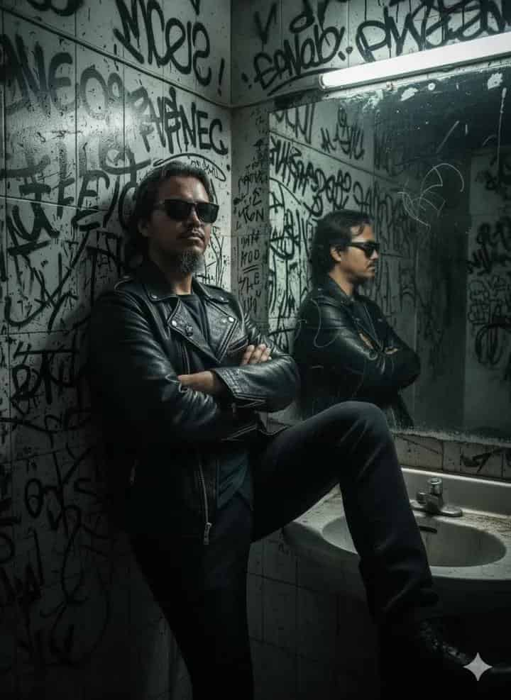

How to use this prompt
Upload a photo of the person you want styled into this rebellious scene. Keep the details like black leather biker jacket, dark sunglasses, and graffiti bathroom setting to preserve the underground energy. You can swap gestures, wall details, or lighting effects if you want a softer or harsher tone — but don’t change the “mirror reflection” aspect, since that’s what makes the shot feel raw and cinematic.
Prompt
"A man (photo uploaded) wearing a black leather biker jacket and dark sunglasses stands in a gritty, graffiti-covered bathroom. He faces the mirror, giving a rebellious middle-finger gesture, his expression calm yet defiant. The mirror is streaked with scratches and reflects the chaotic wall filled with black graffiti tags and scribbles. The sink below is dirty and metallic, adding to the raw, underground, urban vibe.The atmosphere is edgy, cinematic, and reminiscent of punk-rock culture, with dim lighting highlighting the tough, rebellious attitude of the scene."
Why this prompt works
This setup nails that punk-rock, underground aesthetic that feels straight out of a rebellious indie film. The bathroom setting, the scratched mirror, and the graffiti details all work together to create a gritty story in a single shot. For artists, photographers, or AI enthusiasts, it’s a perfect moodboard prompt when you want attitude, defiance, and urban edge in your visuals.
Example Output
Here’s an example result generated with this exact prompt:
Prompt Variations
- Change “bathroom” → “subway station with neon lights” for a cyberpunk edge.
- Swap “black leather jacket” → “denim jacket with patches” for a more punk DIY look.
- Add “cigarette smoke haze” for extra moodiness.
- Replace “middle finger gesture” → “arms crossed” for a silent defiant stance.
FAQ
Can I make the vibe less rebellious but still urban?Yes — you can remove the middle-finger gesture and keep the graffiti + leather jacket. It’ll feel edgy but not overly defiant.
What if I don’t upload a reference photo?The AI will still generate a random male subject, but if you want your face or a specific identity, a reference photo makes it much more accurate.